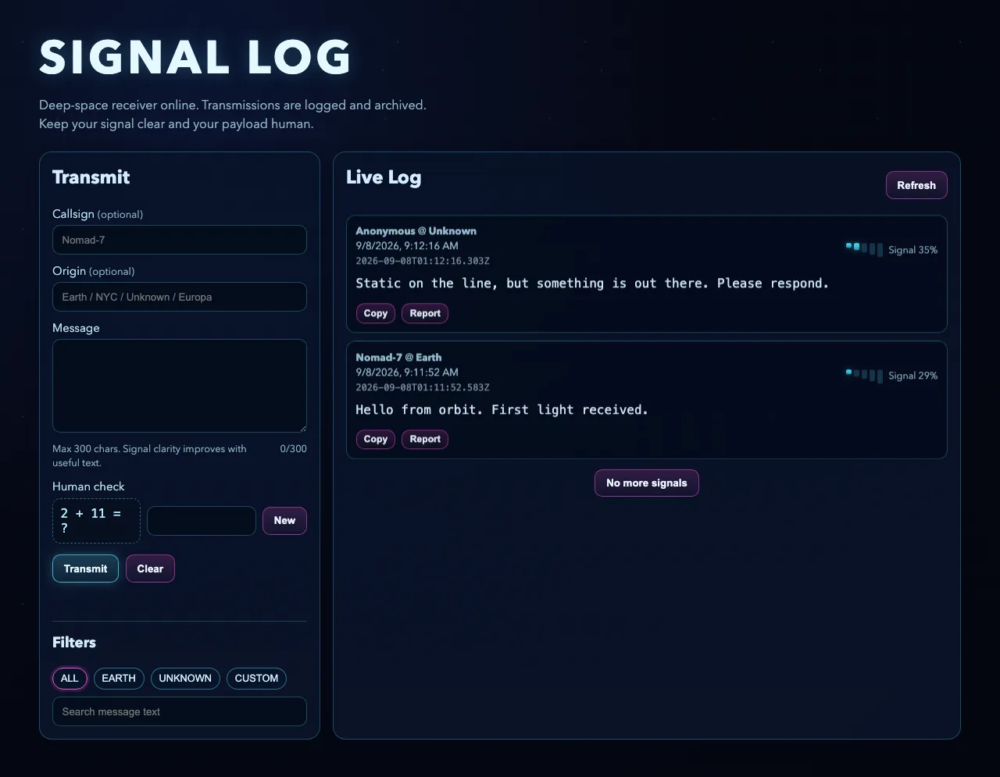

00
这是什么项目
先搞清楚你打开的这坨代码，到底是个什么东西
它是什么
这个项目叫 SIGNAL LOG，中文可以叫它“信号日志”。打开它的主页，你会看到一个深蓝色背景、带着霓虹描边的界面——左边是一张表单，右边是一条不断往下滚的留言列表。说白了，它是一个套着“深空电台”外壳的留言板。你在左边写一句话，点一下发送，这句话就会立刻出现在右边的列表最上面，谁打开这个网页都能看见。
这类项目在业内有个通用叫法：增删改查类项目——你写一条、能看见、能改、能删。你不需要觉得这个词陌生，因为你早就用过它的表亲：微博评论区（你发一条、别人能看见、你自己能删）、小区业主群里接龙报名（一条一条往下排，谁报名了一目了然）。SIGNAL LOG 做的事情跟它们一模一样，只是换了一层“电台接收站”的皮肤，把“留言”叫成“讯号”（transmission），把“评论区”叫成“电台日志”。
换皮不换骨
很多看起来风格迥异的网站，拆开代码一看骨架都差不多。学会一眼认出“这是增删改查”“这是聊天类”“这是数据看板”，你看任何新项目的第一反应就不再是“这是什么魔法”，而是“哦，这是那一类，我大概知道它怎么运转”。
先玩一玩
下面这张图是这个项目在本机真实跑起来之后截的，不是设计稿。两条留言是我自己发的：一条来自“Nomad-7 @ Earth”，另一条没填呼号、来源写的是“Unknown”。你能看到每条留言右上角都有一个信号强度条和百分比，下面有“Copy”“Report”两个按钮。

如果你想自己把它跑起来，打开终端，进到项目文件夹，依次敲这几行：
npm install
按 package.json 里写的清单，把这个项目依赖的几个别人写好的工具包下载到本地的 node_modules 文件夹里。
cp .env.example .env
复制一份环境变量模板，改名叫 .env。这个文件用来存 ADMIN_TOKEN 之类不该写进代码里的口令。
npm run dev
用开发模式启动服务器，代码改了会自动重启。跑起来之后浏览器打开 http://localhost:3000 就能看到上面那张图。
看代码之前的十个词
下面每个词都配了一段这个项目里真实存在的代码，不是我编出来演示用的例句。第一次看到某个词你可能只有模糊的印象，没关系，先混个眼熟，后面每次遇到它，正文里都还会再解释一遍。
server.js:1-9
import express from 'express';
import helmet from 'helmet';
import {
createMessage,
deleteMessage,
getMessageById,
listMessages,
reportMessage
} from './db.js';
import 是“把别处写好的东西搬进当前文件”的意思，这七行一共导入了三样东西：express、helmet，还有 db.js 里的五个函数。
最后一行的 from './db.js' 说明后面四个函数（createMessage 等）不是别人写的工具包，而是同一个项目里 db.js 这个文件自己导出的。
server.js:11-13
const app = express(); const PORT = Number(process.env.PORT || 3000); const ADMIN_TOKEN = process.env.ADMIN_TOKEN || '';
const 声明的名字，值定下来之后就不会再改。这里一口气定了三个：app 是整个网站服务，PORT 是端口号，ADMIN_TOKEN 是管理员口令。
PORT 和 ADMIN_TOKEN 都用了 || 这个写法：优先读环境变量，读不到就用后面的默认值。
server.js:41-43
function jsonError(res, status, error) {
return res.status(status).json({ error });
}
function 用来定义一段可以反复调用的操作，这里定义了一个叫 jsonError 的函数，专门用来快速返回“出错了”的响应。
整个项目里但凡要报错，都会调用这一个函数，而不是每次都重新写一遍格式——这样出错的格式永远统一。
public/app.js:123-126
async function apiFetch(url, options = {}) {
const res = await fetch(url, {
headers: {
'Content-Type': 'application/json',
async / await 是一对搭档：fetch 发请求是要花时间等网络的，前面加了 await，代码就会先停在这一行，等服务器真的回话了才往下走。
fetch 就是浏览器自带的“发请求”动作，第一个参数是要请求的地址。
server.js:148-150
app.get('/api/messages', (req, res) => {
const limit = Math.max(1, Math.min(50, Number.parseInt(req.query.limit, 10) || 50));
const offset = Math.max(0, Number.parseInt(req.query.offset, 10) || 0);
req / res 几乎出现在这个项目每一个接口里：req 里装着浏览器带过来的问题（比如要看第几页），res 是拿来回话用的。
这两行从 req.query 里把“要看多少条”“从第几条开始”这两个参数取出来，还顺手做了范围限制，最多一次给 50 条。
server.js:143-146
app.get('/api/human-check', (_req, res) => {
const challenge = makeHumanCheck();
return res.json(challenge);
});
JSON 是前后端之间传数据时通用的“打包格式”。res.json(challenge) 的意思是把 challenge 这个对象打包成 JSON，发回给浏览器。
这个接口本身不做别的事，只负责生成一道数学题（下一模块会细看），打包完直接送出去。
server.js:158-161
app.post('/api/messages', enforcePostRateLimit, (req, res) => {
const payload = req.body || {};
const callsign = normalizeText(payload.callsign, 24);
middleware 就是 enforcePostRateLimit——它插在路由和真正的处理函数之间，请求会先经过它检查发送频率，通过了才轮到后面这个函数处理。
这也是这个项目唯一一处主动使用自定义中间件的地方，专门用来防止有人无限刷屏。
server.js:226-229
app.delete('/api/messages/:id', adminGuard, (req, res) => {
const id = Number.parseInt(req.params.id, 10);
if (!Number.isInteger(id) || id <= 0) {
return jsonError(res, 400, 'Invalid message id.');
endpoint / route 这一行定义了一个接口：'/api/messages/:id'，冒号加 id 表示这段是可变的，比如 /api/messages/7 里的 7 就会被塞进 req.params.id。
拿到 id 之后先检查它是不是一个正常的正整数，不是的话直接报错，不往下走。
server.js:195-200
const created = createMessage({
createdAt: nowIso(),
callsign: callsign || null,
origin: origin || null,
message
});
null 表示“这里就是没有”。呼号和来源都是选填的，用户不填的话，就用 || null 把它变成明确的“空”，而不是一个空字符串糊弄过去。
这样数据库里存的要么是一段真实文字，要么干脆就是空，不会出现一堆看不出意图的空字符串。
server.js:133-137
if (!ADMIN_TOKEN) {
return jsonError(res, 500, 'Admin token is not configured on server.');
}
const token = req.headers['x-admin-token'];
if (!token || token !== ADMIN_TOKEN) {
header 就是请求里正文之外的附加信息。管理员删除留言时，口令不是写在网址里，而是塞进一个叫 x-admin-token 的 header 里带过去。
服务器这边从 req.headers 里把它取出来，跟自己存的 ADMIN_TOKEN 比对，对不上就直接拒绝。
SIGNAL LOG 更接近下面哪一类项目？
代码里写 const PORT = 3000，这句话是什么意思？
下面哪一句准确描述了 req 和 res？
朋友问你“你在研究的这个 SIGNAL LOG 到底是个啥”，用不超过三句话给他讲清楚。
- 说清楚了它本质上是一个留言板，属于增删改查类（CRUD）项目
- 举了一个类似的生活例子，比如微博评论区或者小区群接龙
- 提到了它至少一个功能：发留言、搜索、或者管理员删除
- 没有原样照抄术语气泡里的定义，是用自己的话说的
01
拆架构
这一模块一行代码都不会出现——先给你一张地图，你才知道后面的代码站在哪儿
这个电台有几个机房
把一个网站想象成一座电台：有人在前台接待访客，有人在机房里调度信号，还有人守着档案室，谁都不许随便进去翻资料。SIGNAL LOG 这个项目打开之后，一共就八个文件，但真正干活的只有四类角色。记住这四类角色，你就有了一张能一直用下去的地图——不管以后你打开哪个项目，先问自己“它的前台是谁、调度是谁、档案室是谁”，十有八九都能对上号。
app.js
前台接待：收你在表单里打的字，检查一遍，发请求出去，等结果回来了再把新内容画到页面上。它自己不存任何东西，你把网页关掉，它记的东西就全没了。
server.js
机房调度员：接下所有从外面打进来的请求，先做各种检查（发太快了吗、是不是机器人、口令对不对），通过了才把活派给该管的人。
db.js
档案室管理员：全项目只有这一个文件会真的去碰硬盘上的数据库文件。想查、想存、想删，都得经过它。
index.html + styles.css
前台的桌子和装修：搭好表单和列表的骨架，刷上深空导航的配色，但它们不负责任何逻辑判断。
关注点分离
这四个角色分得很干净：前台不碰硬盘，档案室不管界面好不好看，调度员自己不存数据。这个原则在工程里有个正式名字，叫“关注点分离”——每一块只管一件事，出问题的时候你才知道该先去哪儿找，而不是把八个文件全打开一遍。
画一张地图
把这四个角色按“谁能接触到什么”分个区，会更清楚。浏览器里能跑的只有前台那一层；服务器上跑着调度和档案室两层，但它们俩之间也有边界——调度员自己不许直接碰数据库文件，必须找档案室管理员帮忙。点下面的方块，看每个角色具体负责什么。
浏览器
服务器
档案室
点任意一个方块，看它负责什么
你可能已经发现：这三个方块画出了一条清清楚楚的单行道——浏览器只能找服务器，服务器只能找档案室，谁都不能跳过中间那一层直接摸到底。这不是巧合，是几乎所有网站共用的一套基本骨架，行话叫“前端 / 后端 / 数据层”三层结构。以后你打开任何一个陌生项目，先找这三层分别是谁，就已经拿到了半张地图。
机房之间怎么传东西
知道了三层分别是谁，还差最后一块拼图：他们之间到底怎么“说话”。答案是靠网络请求——浏览器发一条请求出去，服务器收到、处理、再发一条响应回来，双方靠地址（比如 /api/messages）和请求方式（GET 表示“我要看”，POST 表示“我要新建”，DELETE 表示“我要删除”）来约定“这次到底要干嘛”。整个 SIGNAL LOG 项目所有的功能，说到底都是这三步的不同排列组合：浏览器问、服务器办、浏览器再把结果画出来。
接下来的三个模块会分别沿着这条线路走三趟真实的路：第一趟是你发一条讯号出去，第二趟是这条讯号在服务器里要闯过哪几道关卡，第三趟是你怎么把已经发出去的讯号再找回来、管理员又是怎么把它删掉的。每一趟出发前，都提醒你现在走到了这张地图的哪一块。
如果留言发出去之后，刷新页面发现内容不见了，你会先怀疑哪个文件？
浏览器里的 app.js 能不能跳过 server.js，直接去问 db.js 要数据？
你想删掉一条留言，服务器接到的请求方式最可能是下面哪一种？
用你自己的话说一遍：这个项目分成几块，每一块分别管什么，出问题的时候你会按什么顺序去排查？
- 说出了 app.js 只管前台画面和收集输入，自己不存数据
- 说出了 server.js 负责接请求、做各种检查，再往下派活
- 说清楚了 db.js 是唯一真正碰数据库的文件
- 提到了浏览器不能跳过服务器直接找数据库
02
发一条讯号
你在表单里打了一句话，点了 Transmit——接下来发生了什么
你打的字要先过安检
还记得上一模块地图上的浏览器方块吗？下面这几屏就站在那个方块里，专门跟你走一遍“发一条讯号”这件事，一直走到 app.js 把请求扔出浏览器为止。至于服务器那边收到之后要闯几道关卡，是下一模块的事，这里先只看浏览器这一侧。
先说一件容易被忽略的事：你还没开始打字，页面加载的那一刻，app.js 就已经悄悄问服务器要了一道数学题，用来验证“填表的是个人，不是脚本”。这道题和它的答案，服务器只会记 5 分钟。下面是这个交换过程的实况：
客户端先自己检查一遍
点“Transmit”这个按钮，绑定的其实是表单的提交（submit）事件，而不是按钮本身的点击事件。这么做的第一件事，是在浏览器还没把请求发出去之前，先自己挑一遍毛病——这样明显的错误（比如留言是空的）用户能立刻看到提示，不用白跑一趟服务器再等回复。
public/app.js:178-184
function validateMessageClient(message) {
const trimmed = message.trim();
if (!trimmed) return 'Message is required.';
if (!/[\p{L}\p{N}]/u.test(trimmed)) return 'Message must include at least one letter or number.';
if (/(.)\1{7,}/u.test(trimmed)) return 'Message looks like repeated-character spam.';
return '';
}
先把首尾空格去掉，如果去完是空的，直接打回“Message is required.”，连服务器都不用麻烦。
这一行的意思是：留言里至少得有一个字母或数字，不能是纯符号或纯表情。
这一行专门抓“连续同一个字符出现 8 次以上”，比如一串“啊啊啊啊啊啊啊啊啊”，防止有人靠刷屏灌水。
三关都过了，返回一个空字符串，表示“没毛病”。
这里有个很值得记住的判断：这几条检查在服务器那边其实又原样做了一遍（下一模块你会看到几乎一模一样的函数）。这不是偷懒重复劳动，而是分工——客户端的检查只是为了让用户体验更顺滑，能提前拦住的错误就不折腾网络；但只做客户端检查是不够的，因为任何人都可以绕开你的网页、直接拿工具往服务器发请求。真正说了算的，永远是服务器那一份。
前端校验只是体验优化，不是安全防线
凡是浏览器里能看到、能改的代码，都不能被信任为“安全检查”。真正拦坏数据的那一道关，必须在服务器上再做一遍——这是几乎所有 Web 项目的共识，行话叫“不要信任客户端输入”。
打包发出去
客户端检查通过之后，app.js 要把表单里零散的几个输入框内容，收拢成一份完整的数据，再通过网络送出去。
public/app.js:192-199
const payload = {
callsign: form.callsign.value,
origin: form.origin.value,
message: form.message.value,
humanAnswer: form.humanAnswer.value,
humanToken: state.humanToken,
website: form.website.value
};
payload 就是这次要发的“货物”，六个字段里，你能看到的只有前三个（呼号、来源、留言），后三个是幕后用的：两个配合人机验证，还有一个是下面要说的反机器人陷阱。
这里的 website 字段很特别——表单里确实有一个叫 website 的输入框，但它是刻意藏起来不给人看见的，专门用来抓自动填表的机器人，下一模块会细讲。
public/app.js:207-211
try {
await apiFetch('/api/messages', {
method: 'POST',
body: JSON.stringify(payload)
});
POST 表明这次请求的意图是“新建一条”，路径 /api/messages 就是服务器约定好接收新留言的地址。
JSON.stringify 把 payload 这个对象压平成一段文字，才能塞进请求正文里发出去——这跟模块 00 里 res.json() 做的其实是同一件事的反方向。
下面这段动画把“你点按钮”到“请求真正离开浏览器”这一路串起来，点“下一步”跟着走一遍。
点“下一步”，跟着这条讯号走一遍它离开浏览器之前的旅程。
如果人机验证掉线了
有一种情况值得单独说一下：如果你在页面上停留太久，或者网络卡了一下，refreshHumanCheck 这个函数没能及时把新题目要回来，会发生什么？
public/app.js:164-171
async function refreshHumanCheck() {
const questionEl = document.getElementById('human-question');
if (!questionEl) return;
try {
const data = await apiFetch('/api/human-check');
state.humanToken = data.token;
questionEl.textContent = data.question;
先找到页面上显示题目的那个位置，如果这个元素压根不存在（比如在 admin 页面），直接返回，不做无用功。
拿到新题目之后，把 token 存进页面的状态里，把题目文字显示出来——这个 token 就是你稍后提交表单时会带上的那个。
这个函数在三个时机会被调用：页面第一次打开时、你点了“New”手动换一题时、还有提交失败提示“人机验证”相关错误时——app.js 会自动帮你再要一道新题，而不是让你手动刷新页面重来。这是一种很常见的产品细节：出错之后，能自动补救的就不要甩给用户自己搞定。
validateMessageClient 已经拦住了空留言，服务器那边还要不要再检查一遍？
payload 里的 website 字段，普通用户会在表单上看到并填写它吗？
下面哪种情况也会触发 refreshHumanCheck 被重新调用？
你想给发讯息功能加一个“定位”字段，让用户可以选填经纬度。把你会对 AI 说的那句指令原样写出来，要说清楚改哪个文件、字段叫什么、放在 payload 的什么位置。
- 点名了要改 public/app.js 里的 payload 对象
- 给新字段起了一个具体的名字，比如 location
- 提到了这是选填项，不需要加进 validateMessageClient 的必填检查
03
服务器怎么把关
你的请求飞到了 server.js 门口，它要闯几道关卡才能真正被存下来
请求进门，先看频率
上一模块结束在“请求离开了浏览器”。现在轮到地图上的服务器方块登场了：server.js 收到一个 POST /api/messages 请求之后，不会立刻就往数据库里存，而是要先后闯过三道关卡——发送频率、内容是不是垃圾、人机验证有没有过。这一屏先看第一道：频率限制。
server.js:81-92
function enforcePostRateLimit(req, res, next) {
const ip = getClientIp(req);
const now = Date.now();
const entry = postRateByIp.get(ip) || { recent: [], lastPostAt: 0 };
entry.recent = entry.recent.filter((ts) => now - ts <= rateWindowMs);
if (entry.lastPostAt && now - entry.lastPostAt < minGapMs) {
return jsonError(res, 429, 'Rate limit: wait at least 10 seconds between transmissions.');
}
if (entry.recent.length >= maxPostsPerWindow) {
return jsonError(res, 429, 'Rate limit: maximum 10 transmissions per hour.');
}
这就是模块 00 里认过的中间件（middleware）：它排在路由和真正处理函数之间，先按 IP 地址查一下这个人最近发过几次。
先把超过一小时的旧记录过滤掉，只留最近一小时以内的发送时间。
第一道关：距离上一次发送不到 10 秒，直接拒绝——这就是为什么你连续点两次 Transmit，第二次会报错。
第二道关：这一小时内已经发了 10 条，同样拒绝。两道关卡分别管“太快”和“太多”。
注意这里用的是内存里的一个 Map（postRateByIp），不是数据库——它只是暂存“最近状态”，重启服务器之后所有人的计数都会清零。README 里也特意提到：出于隐私考虑，这个限流状态不进数据库，也不落盘存 IP。
现在来做个小测试：下面这段代码看起来和上面一模一样，但被人悄悄改坏了一处。点一下你觉得有问题的那一行。
这段频率检查代码被人悄悄改坏了，点一下你觉得有问题的那一行。
混子和机器人也想混进来
过了频率关，接下来是内容关。这里要同时防两种情况：完全是垃圾内容（比如空留言、纯符号），以及自动化脚本的批量灌水。SIGNAL LOG 用了两招，一招明的、一招暗的。
server.js:168-179
if (website) {
return jsonError(res, 400, 'Spam detected.');
}
if (!message) {
return jsonError(res, 400, 'Message is required.');
}
if (!hasMeaningfulContent(message)) {
return jsonError(res, 400, 'Message must include at least one letter or number.');
}
if (isRepeatedSpam(message)) {
return jsonError(res, 400, 'Message looks like repeated-character spam.');
}
暗的这一招就在这里：website 是模块 02 提过的那个蜜罐（honeypot）字段。正常人根本看不见它，一旦它有值，说明是脚本自动把表单所有输入框都填了一遍，直接判定为垃圾。
明的这两招是服务器版的内容检查——跟模块 02 里客户端的 validateMessageClient 几乎一模一样，再做一遍是因为客户端的检查可以被绕过，服务器这道才是真正说了算的。
明暗两道防线
蜜罐防的是“不看页面、直接暴力提交”的脚本；内容检查防的是“看了页面、但想灌水”的人或脚本。两种防线针对的对象不一样，所以要叠加使用，单独一种都拦不住全部情况。
人机验证：这道题只考一次
最后一道关，是回到模块 02 里那道数学题。服务器要核对两件事：这道题过期了没有，答案对不对。
server.js:180-188
if (!humanToken || !humanAnswer) {
return jsonError(res, 400, 'Human check is required.');
}
const challenge = humanChecks.get(humanToken);
if (!challenge || challenge.expiresAt < Date.now()) {
humanChecks.delete(humanToken);
return jsonError(res, 400, 'Human check expired. Request a new challenge.');
}
humanChecks 是一个存在服务器内存里的 Map，key 是 token，value 是当时生成的正确答案和过期时间——模块 02 里 app.js 拿到的 token，就是用来在这里查这张表的。
如果这道题已经过期（超过 5 分钟），会先把它从表里删掉，再报错让前端重新要一道——过期的票据不会一直占着位置。
server.js:189-193
if (challenge.answer !== humanAnswer) {
return jsonError(res, 400, 'Human check answer is incorrect.');
}
humanChecks.delete(humanToken);
答案对不上，直接报错——注意这一句和它上面 return 之间，没有再调用一次 humanChecks.delete(humanToken)。
只有答案真的对了，才会走到这一行，把这道题从表里删掉，表示这张票据已经用过，不能再复用。
读代码的时候多问一句“万一……”
对比一下前一张卡片：题目过期时，代码会先 humanChecks.delete(humanToken) 再报错；但答案答错时，只报错，没有删。这意味着同一个 token 在 5 分钟有效期内，可以反复拿去试答案，直到蒙对为止或者过期——这是这个项目里一处真实存在、容易被忽略的小漏洞。读别人的代码时，遇到“对的分支删了、错的分支没删”这种不对称，值得多停一秒问一句“万一走另一条路会怎样”。
过五关之后，才轮到数据库
频率、垃圾内容、人机验证全部通过之后，server.js 才会去找 db.js 帮忙，把这条讯号真正存下来。这一步会顺带算出一个看起来很酷的“信号强度”百分比。
db.js:95-100
function computeStrength(message, id) {
const len = message.length;
const base = Math.min(85, 20 + Math.floor((len / 300) * 65));
const noise = hashInt(id) % 16;
return Math.max(0, Math.min(100, base + noise));
}
留言越长，base 这个基础分越高，最高封顶 85——三百字的长留言和三十字的短留言，看起来的“信号强度”天生不一样。
noise 是根据这条留言的 id 算出来的一个 0 到 15 之间的余量，加进去让每条留言的数字不会显得太规律。
这个百分比不是真的测出来的信号质量，它是照着长度和 id 现算出来的一个装饰性数字——很多产品里那些看起来很硬核的进度条、分数条，拆开看常常也是类似的“算出来的好看数字”。
db.js:102-111
export function createMessage({ createdAt, callsign, origin, message }) {
const tx = db.transaction(() => {
const insert = insertMessageStmt.run({
created_at: createdAt,
callsign,
origin,
message,
strength: 0
});
const id = insert.lastInsertRowid;
这是全项目唯一一处往 messages 表里插入新记录的地方——正好对上模块 01 地图上说的“db.js 唯一碰硬盘”。
事务（transaction）把“先插入、再回填强度”这两步打包在一起：如果中途出了问题，两步会一起失败，不会出现“插入了但强度没算”的半成品数据。
插入的时候先把 strength 填成 0 占位，因为这时候还不知道这条记录最终的数据库 id 是多少，而信号强度的计算恰恰需要用到 id。
拿到 id 之后，代码会调用上面那个 computeStrength 函数算出真正的强度，再更新回这一行记录，最后把这条完整的记录读出来，一路返回给 server.js、再返回给你的浏览器——这正是下面这段动画要走的完整旅程，把频率检查到写入数据库串成一条线。
点“下一步”，看这条讯号怎么闯过三道关卡，最终被存进数据库。
如果一个人疯狂刷屏发了很多条一样的短留言，signal 强度会不会因为“刷屏”这件事被拉低？
用户答错了人机验证的题目，那个 token 会不会立刻从 humanChecks 里删掉？
createMessage 里用 db.transaction 把插入和回填强度包在一起，图的是什么？
朋友问你“这个留言板怎么防止被刷屏灌水”，用不超过三句话讲给他听，不许照抄术语气泡里的原话。
- 提到了发送频率限制（比如多久内不能连续发、一小时最多几条）
- 提到了 honeypot 这个概念或者“隐藏字段抓机器人”的思路
- 提到了人机验证（数学题）这道关卡
04
找回讯号
讯号已经存进去了，接下来看看怎么把它翻出来，以及管理员怎么把它撕掉
档案室怎么按关键词翻资料
主页左下角有一排筛选按钮：ALL、EARTH、UNKNOWN、CUSTOM，右边还有一个搜索框。你点一下 EARTH，列表立刻只显示来源是 Earth 的留言——这背后其实是浏览器和服务器又走了一遍“问答”，只是这次问的是“把符合条件的记录翻出来给我看”，而不是“帮我存一条新的”。
public/app.js:116-121
function originFilterValue() {
if (state.originFilterType === 'earth') return 'earth';
if (state.originFilterType === 'unknown') return '__unknown__';
if (state.originFilterType === 'custom') return state.customOrigin.trim();
return '';
}
四个筛选按钮对应四种返回值：ALL 是空字符串（不筛选），EARTH 是固定的 'earth'，CUSTOM 是你在旁边输入框里打的内容。
UNKNOWN 比较特殊，它返回的不是“unknown”这个词本身，而是一个双下划线包裹的暗号 '__unknown__'——这个暗号是前端和后端私下约定好的，服务器那边看到这个特定字符串，就知道要执行一套专门的“查找没有来源的留言”的逻辑，而不是当成一个普通的关键词去匹配。
db.js:69-75
const listMessagesStmtFactory = ({ hasQuery, hasOrigin, unknownOriginOnly }) => {
let sql = `
SELECT id, created_at, callsign, origin, message, strength
FROM messages
WHERE 1=1
`;
if (hasQuery) sql += ` AND message LIKE @q`;
这是一个“现场拼 SQL 语句”的写法：先搭一个 WHERE 1=1 的空壳（这句恒成立，方便后面用 AND 往上叠条件，不用纠结第一个条件前要不要写 WHERE），再根据实际传进来的筛选条件，一段一段往后拼。
LIKE 就是数据库里的“模糊匹配”，你在搜索框里打的关键词，就是通过这个拼进 SQL 里去匹配留言正文的。
现在来做第二次找 bug 练习：下面这段代码取自 db.js 里真正决定“怎么处理 UNKNOWN 筛选”的部分，同样被人悄悄改坏了一处。
这段代码被人悄悄改坏了，点一下你觉得有问题的那一行。
翻页是怎么回事
点“Load more”按钮加载更多留言，走的也是同一个接口，只是换了几个参数。
server.js:148-156
app.get('/api/messages', (req, res) => {
const limit = Math.max(1, Math.min(50, Number.parseInt(req.query.limit, 10) || 50));
const offset = Math.max(0, Number.parseInt(req.query.offset, 10) || 0);
const query = normalizeText(req.query.q, 100);
const origin = normalizeText(req.query.origin, 64);
const result = listMessages({ limit, offset, query, origin });
return res.json(result);
});
limit 是“一次要几条”，offset 是“从第几条之后开始数”——这就是分页（pagination）最基础的两个参数。不管是第一页还是点了三次“Load more”之后的第四页，走的都是这同一个接口，只是每次带的 offset 不一样。
limit 被 Math.min(50, ...) 死死摁住不能超过 50——就算你在网址里手动改成 limit=10000 也没用，服务器根本不会理你，这是防止有人一次性拖走整个数据库的一道小保险。
public/app.js:143-151
const qs = new URLSearchParams({
limit: String(state.limit),
offset: String(state.offset),
q: state.query,
origin: originFilterValue()
});
try {
const data = await apiFetch(`/api/messages?${qs.toString()}`);
URLSearchParams 把 limit、offset、q、origin 这四个值，自动拼成一段合法的网址参数，你不用自己操心中间要不要加 & 符号、特殊字符要不要转义。
state.offset 会在每次成功加载后自动更新成“已经拿到几条”，所以点第二次“Load more”时，offset 传的就不再是 0，而是已加载的条数。
只有管理员能撕掉这一页
普通用户点“Report”只是留个举报记录，留言本身还在；只有在 /admin 页面、填对了管理员口令，才能真的把一条留言从数据库里删掉。这条路线又要经过模块 00 里认过的那道 header 检查。
server.js:226-235
app.delete('/api/messages/:id', adminGuard, (req, res) => {
const id = Number.parseInt(req.params.id, 10);
if (!Number.isInteger(id) || id <= 0) {
return jsonError(res, 400, 'Invalid message id.');
}
const removed = deleteMessage(id);
if (!removed) {
return jsonError(res, 404, 'Message not found.');
}
这条DELETE 接口前面挂着 adminGuard 这个中间件——回想模块 00 认过的那段代码：请求得先带对 x-admin-token 这个 header，才轮到这里真正执行删除。
id 要先检查是不是一个正常的正整数，数据库里如果根本没有这条记录（比如已经被删过一次），deleteMessage 会返回 false，这里会报 404 而不是假装成功。
public/app.js:263-273
try {
await apiFetch(`/api/messages/${id}`, {
method: 'DELETE',
headers: {
'x-admin-token': state.adminToken
}
});
state.items = state.items.filter((x) => x.id !== id);
state.total = Math.max(0, state.total - 1);
renderItems(true);
showToast('Transmission deleted.');
管理员在页面上填的口令，存在 state.adminToken 里，删除的时候被塞进 x-admin-token 这个 header 一起发出去，跟服务器存的 ADMIN_TOKEN 比对。
服务器确认删除成功之后，前端并没有重新问一遍全部列表，而是直接把这一条从本地的 state.items 里过滤掉，手动把总数减一——这是一种小优化，省了一次网络请求，代价是前端要自己保证这里的账算对。
'__unknown__' 这个字符串，本质上是什么？
如果有人在网址里把 limit 手动改成 5000，服务器会一次性返回 5000 条吗？
没有带对 x-admin-token 这个 header，直接请求 DELETE /api/messages/1，会发生什么？
用你自己的话说一遍：你在主页点了 EARTH 筛选按钮之后，这个请求经过了哪些文件、最后是靠什么条件筛出结果的？
- 提到了 app.js 里 originFilterValue 决定了这次传给服务器的值
- 提到了请求走的是 GET /api/messages 这条路
- 说清楚了真正拼 SQL、执行查询的是 db.js
- 没有把这个过程和“发一条新讯号”的流程搞混
05
做一个类似的
假设你现在要做一个同类项目，按顺序告诉 AI 先做什么、后做什么
施工顺序，不是功能清单
走完前面五个模块，你已经知道 SIGNAL LOG 分几块、每块管什么、一条留言从表单到数据库要闯几道关。现在把这张图倒过来用：假设你要做一个同类的增删改查项目——不管是留言板、待办清单还是读书笔记本，骨架都差不多——下面这五步就是你该让 AI 按顺序去做的施工顺序。顺序比清单本身更值钱：颠倒过来做，大概率要推倒重来。
先搭数据结构
在 db.js 里定义你的数据表和存取函数，参照 SIGNAL LOG 的 messages 表。对 AI 说：Add a SQLite table for todos in db.js, with create/list/delete functions, following the same pattern as messages in this project. 为什么先做这一步：界面要显示什么、字段叫什么，全都由数据结构决定，数据的形状没定好，后面写接口和页面都是在瞎猜。
写最基本的增和查接口
在 server.js 里加两条路由，先不加任何校验。对 AI 说：Add POST and GET routes in server.js that call those db.js functions, no validation yet, just get the data flowing end to end. 为什么先做这一步：先跑通一条最简单的路，确认数据真的能存进去、读出来，比一上来就把所有校验都写全更快发现问题。
把前端表单和列表接上
在 public 目录里做一个表单和一个列表，用 fetch 调刚才那两个接口。对 AI 说：Wire up a form and a list in index.html and app.js that call those two endpoints with fetch, similar to how transmission-form and log-feed work here. 为什么先做这一步：有了真的跑得通的接口，你才知道前端具体要传哪些字段、该显示哪些字段，不用凭空猜。
补上校验和防刷
照着 SIGNAL LOG 的三道关卡，加服务器端校验和频率限制。对 AI 说：Add server-side validation and a rate-limiting middleware like enforcePostRateLimit in this project, plus a honeypot field on the form. 为什么放在这一步：功能先跑通，你才知道真实数据长什么样、容易在哪里出问题；一上来就写校验，很容易堵住一些其实不会发生的情况，也可能漏掉真正的坑。
最后加管理员能力
加一个用口令保护的删除接口和一个管理页面。对 AI 说：Add an admin-token-protected DELETE route and a simple /admin page, following the adminGuard pattern in this project. 为什么放在最后：管理功能是建立在“数据结构和接口已经稳定”这个前提上的，前面四步没做完就加管理后台，大概率要跟着前面的改动来回返工。
第一步说的“参照 messages 表的样子”，具体指的就是这几行——这也是全课最后一次出现代码，贴在这里方便你复刻时直接对着抄结构：
db.js:6-14
db.exec(`
CREATE TABLE IF NOT EXISTS messages (
id INTEGER PRIMARY KEY AUTOINCREMENT,
created_at TEXT NOT NULL,
callsign TEXT,
origin TEXT,
message TEXT NOT NULL,
strength INTEGER NOT NULL
);
id 是每条记录自动递增的编号，created_at 记时间，剩下三个字段是这个项目特有的业务内容，NOT NULL 表示这几列不许留空。
你做“读书笔记本”，对应的表可能是 id、created_at、title（书名）、note（笔记内容）——字段名换掉，NOT NULL 和自增 id 这两个套路照抄就行。
你最可能撞上的报错
下面四条报错都是我在本机真实跑这个项目时跑出来的，不是编的。遇到的时候，先看清楚是哪一条，再决定该对 AI 说什么。
Error: listen EADDRINUSE: address already in use :::3000
3000 端口已经被占了，通常是你上一次启动的服务还在后台跑着，没关掉就又启动了一次。对 AI 说：“Kill whatever is running on port 3000, or change the app to read the port from an environment variable so I can use a different one.”
Admin token is not configured on server.
你调用删除接口时，服务器发现 ADMIN_TOKEN 这个环境变量是空的。容易踩的坑是：这个项目没有引入 dotenv 这类工具包，只是 cp 了一份 .env 文件，服务器并不会自动读它。对 AI 说：“This project doesn't load .env automatically. Show me how to actually set ADMIN_TOKEN before running node server.js, for example with Node's --env-file flag.”
Human check answer is incorrect.
人机验证的数学题答错了。这条一般不是代码的问题，是你自己算错了或者页面上的题目已经刷新过一次。对 AI 说的话用不上——重新看一眼题目、填对答案就行，如果一直报错，可以说：“The human-check token might be stale, add a button to refresh it automatically on error.”
Rate limit: wait at least 10 seconds between transmissions.
你连续点了两次 Transmit，间隔不到 10 秒。这是故意设计的防刷限制，不是 bug。如果你在自己做的项目里想调整这个间隔，可以对 AI 说：“Change minGapMs in server.js from 10 seconds to 5 seconds, and explain the tradeoff of making it shorter.”
报错原文要一字不改地丢给 AI
遇到没见过的报错，最有效的做法不是自己先脑补原因，而是把终端里那一整段红字原样复制粘贴给 AI，包括最上面那一行和最下面的堆栈信息。报错文字里的每一个词都是线索，你觉得“不重要”而手动删掉的那部分，很可能正是 AI 判断原因所需要的。
让 AI 帮你跑起来
把项目跑起来、加一个功能、修一个报错——这三件事你已经在前两屏里各看过至少一个真实例子了。这里再补一条，覆盖“想看懂一个陌生项目”这个最开始的场景，凑成一套你以后打开任何项目都能直接用的起手式：
对 AI 说：Read through this project and tell me what each file does, and what happens end to end when I submit the form. 拿到一个陌生项目，先用这句话让 AI 帮你梳理一遍角色分工和主线流程，比自己一个文件一个文件地翻要快得多——这其实就是这门课模块 01 和模块 02 到 04 分别在帮你做的事。
照着复刻蓝图，下面哪一步应该最先做？
复制了 .env.example 改名成 .env，为什么 ADMIN_TOKEN 还是不生效？
遇到没见过的报错，比较好的做法是？
你想做一个“读书笔记本”项目，同样是增删改查类。参照复刻蓝图第一步和第二步，把你会对 AI 说的完整指令写出来（数据结构 + 最基本的接口这两步都要提到）。
- 提到了先在 db.js 这一层定义数据表和字段
- 提到了 server.js 里最基本的新增和查询两个接口
- 说清楚了先不加校验，等接口跑通了再补